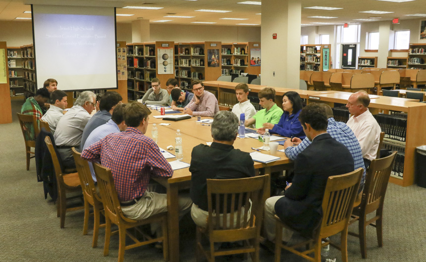

Reflections
Insights and Learning from The Greening Plato Project
Project Reflection

Key Takeaways
We learned how to effectively communicate with different sectors within our school, particularly the CUSG. This experience helped us realize that for our voices to be heard, we must engage with individuals and institutions that hold authority and decision-making power. In our case, this meant reaching out to the Legislative Body of the CUSG, which plays a crucial role in elevating student concerns.
Through the project, we strengthened not only our communication skills but also our teamwork, as we learned to trust one another with different responsibilities. We encountered challenges related to coordination and limited time, which were addressed through collaboration, clear task delegation, time management, and open communication.
Overall, the experience allowed us to apply key concepts from Political Sociology and Anthropology to real-life contexts, deepening our understanding of social structures and power relations. It also reinforced the importance of electing and supporting leaders who genuinely represent and care for the people they serve.